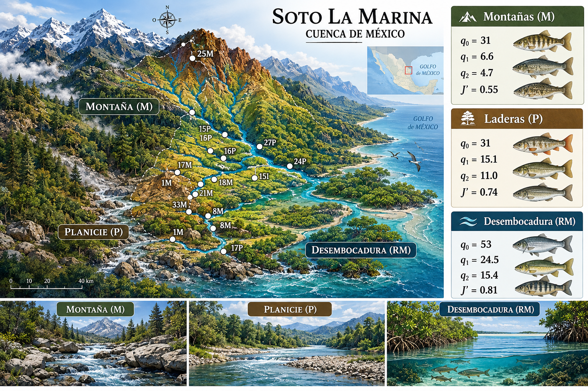
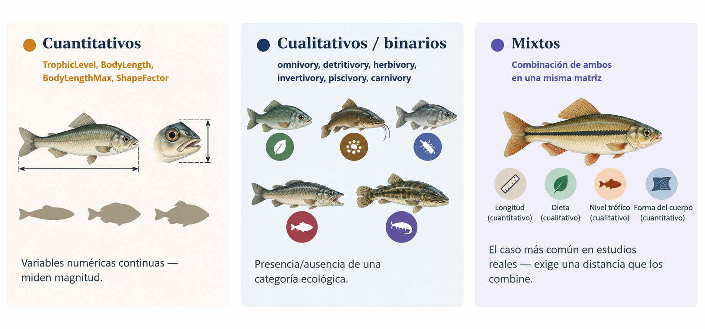
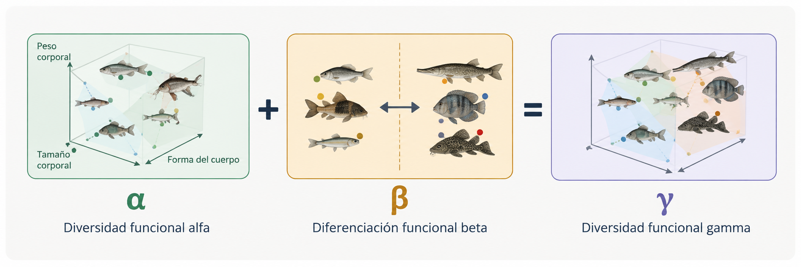
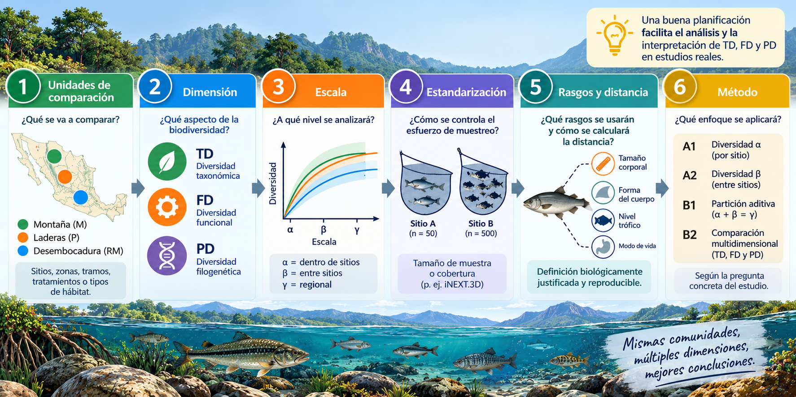

Taller1. Organización de matrices
Los datos de este y el resto de talleres con peces, son tomados del manuscrito de Ruiz-Campos et al. (2021) (enlace_manuscrito).
Materiales requeridos para el taller en clase
En los siguientes enlaces se podrán descargar archivos comprimidos de los dos talleres donde se pueden aplicar procedimientos para la manipulación y organización de las bases de datos requeridas en los análisis de diversidad funcional - FD y filogenética - PD, con los datos de peces de México de Ruiz-Campos et al. (2021) (📰 Taller1_bases_datos_diversidad).
Nota: una vez se descarguen los materiales, se requiere descomprimirlos antes de realizar cualquier procedimiento y seguir las orientaciones del docente para realizar los ejercicios requeridos.
Diapositivas en vivo - Slides.com

Antes de empezar
- Semana 8 — cierre de la Unidad I (Introducción y bases conceptuales).
- RA que se trabajan hoy: RA1 (métricas de diversidad con datos reales) y RA2 (flujos de trabajo reproducibles en R).
- Se usa el caso guiado de peces de México como modelo metodológico: la misma estructura y código se reutilizarán con la comunidad del Caribe colombiano del estudio de caso integrador (Unidad V).
NotaObjetivo de esta sesión
Al terminar este taller se podrá:
- Cargar y organizar en R las bases que necesita cualquier análisis de diversidad multidimensional: abundancias, rasgos funcionales, coordenadas y una primera aproximación a la filogenia.
- Detectar y corregir los errores de alineación más comunes entre esas bases — nombres que no coinciden, espacios ocultos, especies faltantes — antes de que produzcan resultados silenciosamente incorrectos.
- Dejar el documento Quarto renderizando sin errores: el primer entregable reproducible del curso.
1. Estructura de un documento de Quarto
Un archivo .qmd tiene tres partes: encabezado YAML (título, formato de salida, etc.), texto narrativo en Markdown y bloques de código (chunks, delimitados por ```{r} y ```).
Para producir el documento final (HTML) se usa el botón Render de RStudio, o desde la consola:
Código
quarto::quarto_render("Taller1_bases_datos_diversidad.qmd")
TipBuen hábito desde el primer taller
Renderiza con frecuencia, no solo al final: si algo se rompe, es mucho más fácil ubicar el chunk responsable.
2. Librerías necesarias
Código
library(tidyverse) # manipulación de datos y programación
library(readxl) # leer archivos Excel (.xlsx)
library(kableExtra) # tablas con mejor formato para el reporte
library(ape) # manipulación de árboles filogenéticos
library(taxize) # validación de nombres científicos en bases de datos taxonómicas (NCBI)Si falta alguna, se instala una sola vez con install.packages("nombre_paquete") (o remotes::install_github(...) para paquetes de GitHub, como se verá con iNEXT.3D en sesiones posteriores).
3. Bases de datos que se van a necesitar
Los datos de este y el resto de talleres con peces, son tomados del manuscrito de Ruiz-Campos et al. (2021) (enlace_manuscrito).
ImportanteEl insumo de todo el curso
Para calcular cualquier métrica de TD, FD o PD se necesita, como mínimo, que estas piezas coincidan exactamente en su lista de especies:
| Pieza | Qué contiene | Filas × Columnas |
|---|---|---|
| Abundancias | Cuántos individuos de cada especie hay en cada sitio | sitios × especies |
| Rasgos funcionales | Características ecológicas de cada especie | especies × rasgos |
| Filogenia | Relaciones evolutivas entre especies | árbol / matriz especies × especies |
| Coordenadas (opcional pero útil) | Ubicación de cada sitio | sitios × (x, y) |
“Coinciden exactamente” es la parte que más tiempo consume — y la que se va a practicar hoy.
En este caso guiado, todo proviene del archivo datos.xlsx, en las hojas tax (abundancias), rasgos (rasgos funcionales) y coord (coordenadas).
4. Paso 1 — Matriz de abundancias (biol1)
Se carga la hoja tax: 42 sitios (filas) y 87 especies de peces (columnas). Las columnas Sites y Sites1 no son especies: son el código de sitio y la zona del gradiente (M = Montaña, P = Laderas, RM = Desembocadura).
Código
ruta_datos <- "datos.xlsx" # se ajusta la ruta si el archivo está en otra carpeta
tax <- read_xlsx(ruta_datos, sheet = "tax")
# Matriz de abundancias: sitios (filas) x especies (columnas)
biol1 <-
tax %>%
dplyr::select(-Sites, -Sites1) %>%
as.data.frame()
rownames(biol1) <- tax$Sites
dim(biol1) # debería ser 42 sitios x 87 especies[1] 42 87Código
biol1[1:4, 1:5] # vistazo rápido Hypanus sabinus Elops saurus Megalops atlanticus Albula vulpes
11M 0 0 0 0
12M 0 0 0 0
13M 0 0 0 0
14M 0 0 0 0
Anguilla rostrata
11M 0
12M 0
13M 0
14M 0Se guarda también la zona de cada sitio, para comparar diversidad entre zonas en talleres posteriores:
Código
# tabulación por zonas
zonas <-
tax %>%
dplyr::select(Sites, Zona = Sites1)
table(zonas$Zona)
M P RM
24 16 2 5. Paso 2 — Matriz de rasgos funcionales (rasgos1)

La hoja rasgos trae, para cada una de las 87 especies: nombre científico completo (LatinName), una abreviatura (Abrev), y 10 rasgos — 4 cuantitativos (TrophicLevel, BodyLength, BodyLengthMax, ShapeFactor) y 6 binarios de dieta (omnivory, detritivory, herbivory, invertivory, piscivory, carnivory).
AdvertenciaPor qué se alinea por
LatinName y no por Abrev
LatinName es idéntico y está en el mismo orden entre tax y rasgos — ya verificado. Las abreviaturas (Abrev) de cada hoja se generaron por separado y no coinciden entre sí; abreviar cada matriz “por su cuenta” (como abbreviate()) puede desalinear en silencio (NA sin aviso).
Regla práctica: alinear siempre por el identificador más completo y único disponible (aquí, el nombre científico), y generar abreviaturas después de esa alineación ya verificada — nunca de forma independiente en cada matriz.
Código
# Cargar base de datos de rasgos
rasgos_raw <- read_xlsx(ruta_datos, sheet = "rasgos")
# Chequeo de alineación ANTES de continuar (debe quedar vacío en ambos casos)
setdiff(colnames(biol1), rasgos_raw$LatinName)character(0)Código
setdiff(rasgos_raw$LatinName, colnames(biol1))character(0)Código
# organización de los rasgos
rasgos1 <-
rasgos_raw %>%
column_to_rownames("LatinName") %>%
dplyr::select(TrophicLevel, BodyLength,
BodyLengthMax, ShapeFactor,
omnivory, detritivory, herbivory,
invertivory, piscivory, carnivory)
# Se reordena para que coincida EXACTAMENTE con el orden de columnas de biol1
rasgos1 <- rasgos1[colnames(biol1), ]
# Chequeo duro: si esto no es TRUE, algo sigue mal alineado
identical(rownames(rasgos1), colnames(biol1))[1] TRUECódigo
dim(rasgos1) # 87 especies x 10 rasgos[1] 87 10Código
head(rasgos1, 4) TrophicLevel BodyLength BodyLengthMax ShapeFactor omnivory
Hypanus sabinus 3.3 227.451 431.7647 5.73 0
Elops saurus 3.8 227.451 431.7647 5.73 0
Megalops atlanticus 4.4 227.451 431.7647 5.73 0
Albula vulpes 3.2 227.451 431.7647 5.73 0
detritivory herbivory invertivory piscivory carnivory
Hypanus sabinus 0 0 1 0 0
Elops saurus 0 0 0 1 0
Megalops atlanticus 0 0 0 1 0
Albula vulpes 0 0 1 0 0Con rasgos1 y biol1 ya alineados especie por especie, ahora sí es seguro generar nombres cortos para tablas o gráficos:
Código
# Abreviaturas de las especies
abrev_segura <-
setNames(rasgos_raw$Abrev,
rasgos_raw$LatinName)[colnames(biol1)]
head(abrev_segura) Hypanus sabinus Elops saurus Megalops atlanticus Albula vulpes
"Hyps" "Elps" "Mgla" "Albv"
Anguilla rostrata Myrophis punctatus
"Angr" "Myrp" 6. Paso 3 — Coordenadas de las localidades (coord)
Aquí aparece un error real de los datos, del tipo que el Capítulo 8 advierte pero no muestra en vivo.
Código
# Cargar base de datos de las coordenadas de los sitios
coord_raw <- read_xlsx(ruta_datos, sheet = "coord")
# Intento directo de alinear coord con los sitios de biol1
setdiff(rownames(biol1), coord_raw$Code)[1] "12M"Si ese setdiff() no quedó vacío, hay al menos un sitio de biol1 que “no existe” en coord — aunque se sabe que sí existe. Se investiga:
Código
# Se buscan códigos parecidos a "12M" en coord
coord_raw$Code[grepl("12", coord_raw$Code)][1] "12 M"Código
# Se compara carácter por carácter con el que sí está en biol1
utf8ToInt("12M") # el código "correcto", tal como está en tax[1] 49 50 77Código
utf8ToInt(coord_raw$Code[grepl("12", coord_raw$Code)]) # el código en coord[1] 49 50 160 77
TipEl diagnóstico
utf8ToInt() muestra el código numérico de cada carácter. Se notará un 160 donde se esperaría un espacio normal (32): un espacio de no separación (\u00A0), invisible en Excel pero distinto para R. Es justo el tipo de inconsistencia o de “Problemas comunes”: “Evitar tildes, caracteres especiales y espacios dobles”.
La corrección: se elimina cualquier carácter que no sea letra o número.
Código
# Eliminar caracteres no requeridos
coord_raw <-
coord_raw %>%
mutate(Code = str_remove_all(Code, "[^A-Za-z0-9]"))
# Verificación: ahora sí debería quedar vacío
setdiff(rownames(biol1), coord_raw$Code)character(0)Con los códigos ya limpios, se organiza la tabla final de coordenadas:
Código
# Organización de la base de coordenadas
coord <-
coord_raw %>%
dplyr::select(Code, Longitude, Latitude) %>%
column_to_rownames("Code")
coord <- coord[rownames(biol1), ] # mismo orden que biol1
# Comparación de la hoja de coordenadas con la de abundancias
identical(rownames(coord), rownames(biol1))[1] TRUECódigo
head(coord, 4) Longitude Latitude
11M -99.49750 24.47917
12M -99.68333 24.52528
13M -99.38417 24.51250
14M -99.26750 24.415007. Paso 4 — Preparando la dimensión filogenética (primer acercamiento)
En las Unidades III y IV se calcularán FD y PD con estas matrices. Por ahora el objetivo es más modesto: dejar los nombres científicos listos y validados.
AdvertenciaEste paso necesita conexión a internet
Consultar la base taxonómica del NCBI para cada especie. Si no se cuenta con internet, este procedimiento no puede continuar.
Código
# Seleccionar los nombres científicos de las especies
splist <- unique(rasgos_raw$LatinName)
# Consulta la clasificación taxonómica en NCBI para las 87 especies
spcla <- classification(splist, db = "ncbi")
# Se guarda para no repetir esta consulta cada vez que se renderice el documento
saveRDS(spcla, "clasificacion_ncbi.rds")Código
especies_no_encontradas <-
names(spcla)[
vapply(spcla, function(x) is.null(x) || all(is.na(x)),
logical(1))
]
especies_no_encontradas # muestra cuáles especies quedaron fuera
NotaPor qué esto importa (y un detalle a cuidar)
Es normal que 2 o 3 especies no se encuentren en NCBI (sp./spp., sinónimos no actualizados, etc.). Si luego se fuerzan todos los nombres originales sobre un árbol con menos puntas que especies, la asignación puede fallar o desalinear en silencio.
La forma segura: una vez construido el árbol, conservar solo las especies presentes en tr$phylo$tip.label, y filtrar biol1 y rasgos1 a ese mismo subconjunto. Este patrón completo se verá en la Unidad IV.
8. Paso 5 — Checklist final de consistencia
Antes de dar por buena la organización de datos, se ejecutan estas verificaciones — las mismas que se repetirán con el estudio de caso propio:
Código
chequeos <-
tibble(
chequeo = c(
"biol1 y rasgos1 tienen las mismas especies, en el mismo orden",
"biol1 y coord tienen los mismos sitios, en el mismo orden",
"rasgos1 no tiene valores NA",
"biol1 no tiene valores negativos"
),
resultado = c(
identical(colnames(biol1), rownames(rasgos1)),
identical(rownames(biol1), rownames(coord)),
!any(is.na(rasgos1)),
!any(biol1 < 0)
)
)
chequeos %>%
kbl(booktabs = TRUE) %>%
kable_styling(full_width = FALSE) %>%
row_spec(0, bold = TRUE)| chequeo | resultado |
|---|---|
| biol1 y rasgos1 tienen las mismas especies, en el mismo orden | TRUE |
| biol1 y coord tienen los mismos sitios, en el mismo orden | TRUE |
| rasgos1 no tiene valores NA | TRUE |
| biol1 no tiene valores negativos | NA |
Si las tres filas dicen TRUE y la última NA, las matrices están listas para cualquier análisis de diversidad posterior.
9. Qué sigue

- Unidad III (Semanas 9–10):
rasgos1→ distancias funcionales de Gower → FRic, FEve, FDiv, FDis y RaoQ (paquetesFDymFD). - Unidad IV (Semanas 11–13): se retoma la validación NCBI de este taller para construir el árbol filogenético completo y su matriz de distancias, con
alineador.Rpara diversidad beta filogenética. - Unidad V (Semanas 14–17): todo este flujo —abundancias, rasgos, coordenadas, filogenia, checklist— se repite con los datos del propio estudio de caso del Caribe colombiano.
10. Cuestionario de práctica dirigida (individual)
Con biol1, rasgos1 y coord ya construidos, se debe resolver y dejar el código en el .qmd:
- ¿Cuál es el sitio con mayor número de especies presentes (riqueza observada)?
- ¿Cuál es la especie más ampliamente distribuida (presente en más sitios)?
- Generar una tabla con, para cada zona (
M,P,RM), el número de sitios y la riqueza total de especies. - ¿por qué la riqueza por sitio (pregunta 1) y la riqueza total por zona (pregunta 3) no son el mismo número?
Renderizar el documento y se lleva el HTML a la próxima sesión para socializar resultados.
11. Preguntas para el estudio de caso

Responder brevemente pensando en el estudio de caso a seleccionar:
- ¿Qué grupo taxonómico resulta de interés (peces, aves, plantas, u otro)?
- ¿Conseguir una matriz de abundancias por sitio para ese grupo en el Caribe colombiano?
- ¿Qué rasgos funcionales tendrían sentido ecológico para ese grupo? (mínimo 2 cuantitativos y 2 categóricos/binarios). Incluir referentes bibliográficos que lo soporten.
- ¿Qué obstáculo de los analizados en este taller (nombres inconsistentes, especies no encontradas en bases taxonómicas, datos faltantes), se pueden enfrentar con el estudio de caso y por qué?
No es necesario resolverlo hoy — es una checklist para empezar a revisar las fuentes de datos con tiempo.